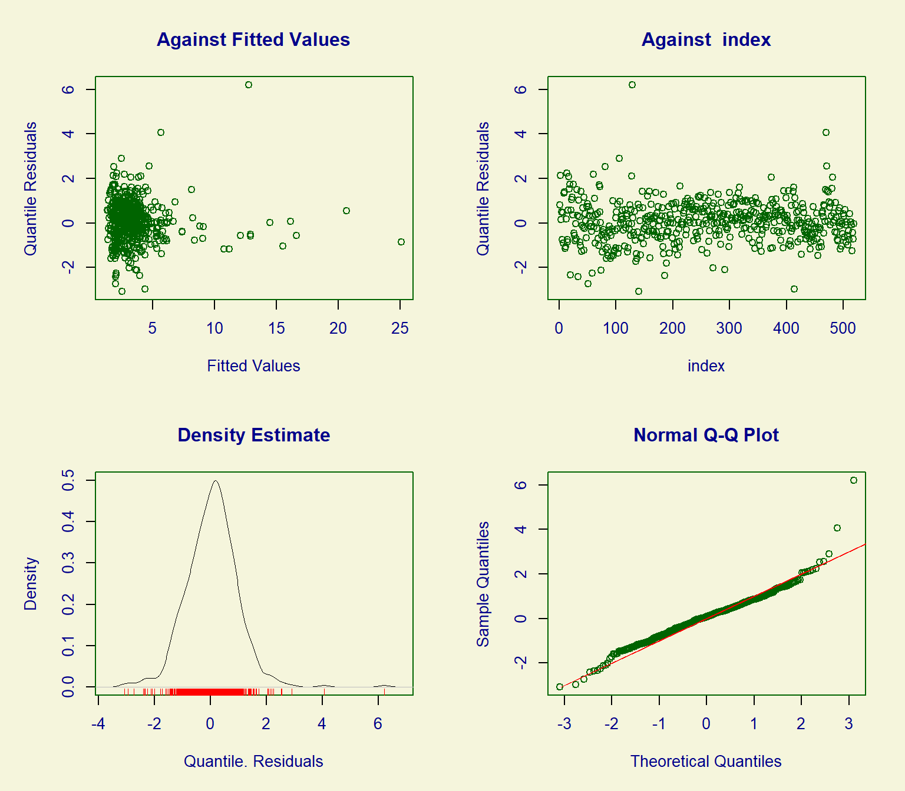

Appendix D — Generalized autoregressive moving average (GARMA) models
Let \(Y_t\) be the observed time series and \(\boldsymbol{X_t}\) exogenous regressors. Then, we can model the conditional distribution of \(Y_t\), given \(Y_1,\dots,Y_{t-1}\), \(\boldsymbol{X_1,\dots,X_{t}}\) as \[
g(\mu_t)=\boldsymbol{X}'_t\beta+\sum_{j=1}^p\phi_j\{g(Y_{t-j})- \boldsymbol{X}'_{t-j}\beta\}
+\sum_{j=1}^q\theta_j \{g(Y_{t-j})-g(\mu_{t-j})\},
\tag{D.1}\] where \(g(\cdot)\) is an appropriate link function; \(\mu_t\) is a conditional mean of the dependent variable; \(\boldsymbol{\beta}\) is a vector of regression coefficients; \(\phi_j\), \(j=1,\dots, p\), are the autoregressive coefficients; \(\theta_j\), \(j=1,\dots,q\), are the moving average coefficients, while \(p\) and \(q\) are the autoregressive and moving average orders, respectively.
In certain cases, the function \(g(\cdot)\) requires some transformation of the original series \(Y_{t-j}\) to avoid the non-existence of \(g(Y_{t-j})\)(Benjamin et al. 2003).
The generalized autoregressive moving average model (Equation D.1), GARMA(\(p,q\)), represents a flexible observation-driven modification of the classical Box–Jenkins methodology and GLMs for integer-valued time series. GARMA further advances the classical Gaussian ARMA model to a case where the distribution of the dependent variable is not only non-Gaussian but can be discrete. The dependent variable is assumed to belong to a conditional exponential family distribution given the past information of the process and thus the GARMA can be used to model a variety of discrete distributions (Benjamin et al. 2003). The GARMA model also extends the work of Zeger and Qaqish (1988), who proposed an autoregressive exponential family model, and Li (1994), who introduced its moving average counterpart.
NoteExample: Insurance claims GARMA model
Here, we revisit the insurance claims example from Section 9.5.
Code
logconstant<-1Insurance<-read.csv("data/insurance_weekly.csv")%>%dplyr::select(Claims, Precipitation)%>%mutate(Precipitation_lag1 =dplyr::lag(Precipitation, 1), Week =1:nrow(.), Year =rep(2002:2011, each =52), Claims_ln =log(Claims+logconstant))summary(Insurance)
#> Claims Precipitation Precipitation_lag1 Week
#> Min. : 0.00 Min. : 0.000 Min. : 0.00 Min. : 1
#> 1st Qu.: 1.00 1st Qu.: 0.775 1st Qu.: 0.75 1st Qu.:131
#> Median : 3.00 Median : 3.800 Median : 3.80 Median :260
#> Mean : 3.61 Mean : 7.713 Mean : 7.72 Mean :260
#> 3rd Qu.: 4.00 3rd Qu.:10.000 3rd Qu.:10.00 3rd Qu.:390
#> Max. :170.00 Max. :77.300 Max. :77.30 Max. :520
#> NA's :1
#> Year Claims_ln
#> Min. :2002 Min. :0.000
#> 1st Qu.:2004 1st Qu.:0.693
#> Median :2006 Median :1.386
#> Mean :2006 Mean :1.252
#> 3rd Qu.:2009 3rd Qu.:1.609
#> Max. :2011 Max. :5.142
#>
Fit a GARMA model relating the weekly number of insurance claims to the total precipitation during that and previous weeks. For fitting the model, you will need the gamlss.util package, which is archived on CRAN. Follow the link to download the latest version, then install it from the archive.
# The model function doesn't accept NAs, so remove themInsurance_noNA<-na.omit(Insurance)library(gamlss.util)m00zip<-garmaFit(Claims~Precipitation+Week+Precipitation_lag1 ,family =ZIP ,data =Insurance_noNA)
Based on the smallest AIC, select negative binomial distribution (NBI) for the GARMA model. Obtain ACF and PACF plots of the model residuals to select ARMA order (Figure D.1).
Code
p1<-forecast::ggAcf(m00nbi$residuals)+ggtitle("")+xlab("Lag (weeks)")p2<-forecast::ggAcf(m00nbi$residuals, type ="partial")+ggtitle("")+xlab("Lag (weeks)")p1+p2+plot_annotation(tag_levels ='A')
Figure D.1: ACF and PACF plots of residuals of the base model GARMA(0,0) based on NBI distribution.
Based on the observed ACF and PACF patterns (Figure D.1), an appropriate model for the temporal dependence could be ARMA(1,0), ARMA(3,0), or ARMA(1,1), among the most parsimonious options. Alternatively, we can select the orders based on AIC:
(res_arma<-forecast::auto.arima(m00nbi$residuals, d =0, D =0, stepwise =FALSE))
# Extract the orders, see the value 'arma' in ?stats::arimap<-res_arma$arma[1]q<-res_arma$arma[2]
Refit the GARMA model specifying these orders. Then verify that the temporal dependence in residuals was removed (Figure D.2), and assess other assumptions (Figure D.3), including homogeneity and normality of the quantile residuals.
#> ******************************************************************
#> Summary of the Randomised Quantile Residuals
#> mean = 0.0569
#> variance = 0.854
#> coef. of skewness = 0.532
#> coef. of kurtosis = 7.32
#> Filliben correlation coefficient = 0.98
#> ******************************************************************

Figure D.3: Default diagnostics of the GARMA(1,0) model residuals based on NBI distribution.
The residual diagnostics look somewhat adequate. The issue is with the residuals showing high kurtosis (recall that kurtosis of normal distribution equals 3) and some outliers in the right tail. Also, consider Section 9.5 for another analysis of this dataset.
Benjamin MA, Rigby RA, Stasinopoulos DM (2003) Generalized autoregressive moving average models. Journal of the American Statistical Association 98:214–223. https://doi.org/10.1198/016214503388619238
Li WK (1994) Time series models based on generalized linear models: Some further results. Biometrics 50:506–511. https://doi.org/10.2307/2533393
Zeger SL, Qaqish B (1988) Markov regression models for time series: A quasi-likelihood approach. Biometrics 44:1019–1031. https://doi.org/10.2307/2531732